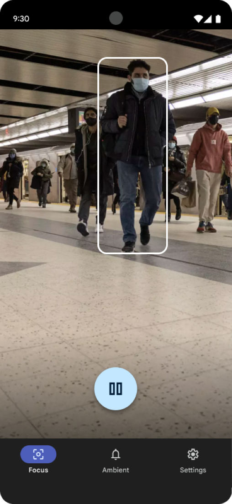
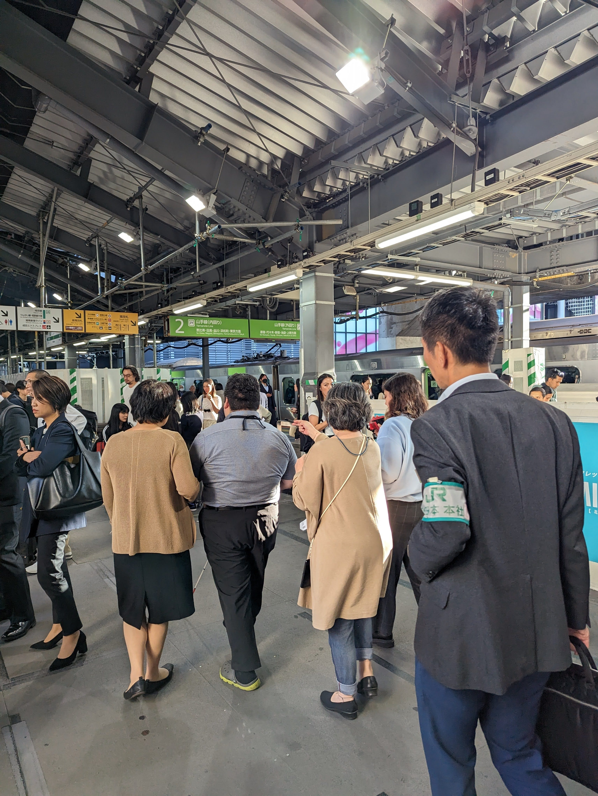
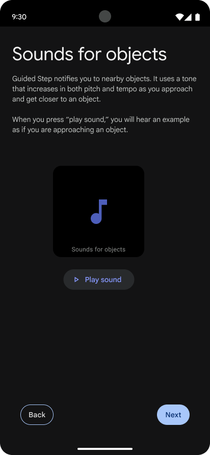
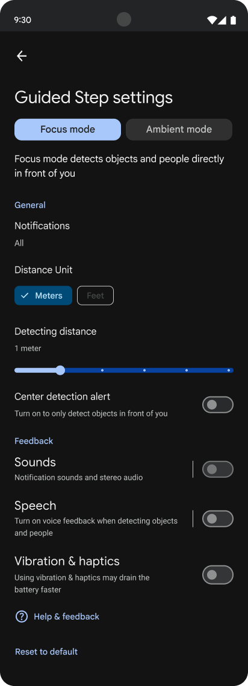

Google Pixel
Guided Step
−44% obstacle hits. Navigation help for blind and low-vision users, validated in a 20-participant experimental study against cane-only navigation. Submitted to CHI 2026 and approved by Google for public sharing.

01 / ChallengeThe Challenge
Guide canes catch what's at the ground. They don't catch what's at trunk or head level. The question: could a phone with AI detection close that gap, without replacing the cane?
02 / Co-designThe Process: A Global Co-Design
Three rounds of co-design with 15 blind and low-vision participants across three continents. Each round happened in a more demanding environment than the last. Each one changed the design.
Round one: Tokyo. A busy shopping center and Shibuya station, deliberately chosen as a stress test (Shibuya is one of the most chaotic pedestrian environments in the world). A team member walked alongside each participant, ready to intervene if a collision was imminent. The lesson came fast. The early prototype generated too many notifications in dense spaces, participants were in cognitive overload, and the sound system wasn't yet memorizable enough to process while managing a cane.
Round two: outdoor corporate campuses in the US, with blind athletes from the US Association of Blind Athletes. The focus shifted to interaction model, interface structure, and sound design. The sonic language had to communicate obstacle type, direction, and proximity. Without overwhelming the user.
Round three: Paris. Sidewalks, pedestrian streets, plazas, parks. The core design was stable enough by this point to test the full end-to-end experience, including onboarding a first-time user from zero. The test wasn't just whether the app worked. It was whether a blind user could learn it independently and trust it enough to walk with confidence.


03 / PrinciplesKey Learnings: The Three Pillars
Three rounds of co-design, three design principles. Each one came from something that broke in testing.

A user who misunderstands the feedback could be more dangerous than no app at all. Onboarding was a safety requirement. 100% of participants rated the app easy or very easy to learn.

Blind users are already managing cane, environment, and audio at the same time. Any UI complexity was a dangerous distraction. We reduced the interface to three tabs.

No two users wanted the same experience. Customization wasn't optional. It was the only way to serve the full range of how blind users actually navigate.
04 / InteractionFocus and Ambient: Designing for Context
One of the most important decisions came out of co-design: a two-mode system that let users shift the app's behavior based on where they were and what they needed.
Focus mode is critical notifications only. Obstacles and people directly ahead. Sounds and haptics, no voice. The mode for moving fast: a crowded airport to catch a flight, a familiar neighborhood, A to B without distraction.
Ambient mode opens the detection range and adds voice descriptions ("car, right, 3 meters," "bench, center"). The mode for learning: arriving somewhere new, understanding the layout of a plaza, building a mental map before committing to a route. One athlete described it as similar to walking with a guide dog: the ability to "cruise down the street" with awareness rather than anxiety.
The distinction sounds simple. It wasn't. Getting the boundary right (what information belonged in each mode, how quickly users could switch, how the sound design changed between them) took iteration across all three rounds. The result is an app that can be a precision tool or a spatial awareness system, depending on what the user needs in that moment.
05 / ResultsThe Impact: Validated Results
Guided Step was validated in a 20-participant experimental study on an outdoor corporate campus. Each participant navigated the same course twice (once with their cane alone, once with Guided Step) in randomized order to eliminate learning effects.
"I am more confident that I will not crash or fall... It can detect things that's further out than the cane. It's good to know what's around you and have awareness of people and cars. With the cane you're always hesitating, second guessing every step."
Study Participant
100% of participants rated Guided Step easy or very easy to use. Half expressed enthusiasm for adopting it immediately. The findings were submitted to CHI 2026 (one of the most selective venues in human-computer interaction) and approved by Google for public sharing.
06 / ForwardWhat This Project Contributed
Guided Step didn't ship to production. It did something more durable: a validated design framework for AI-powered assistive navigation, grounded in three rounds of co-design across three continents and rigorous enough to clear CHI peer review.
The three pillars (guided setup, minimalist UI, full customization) aren't specific to navigation apps. They apply to any product where the stakes of getting the interaction wrong are physical, not just inconvenient. That's the standard I bring to accessibility work.
This is the kind of design work I bring to consulting engagements. If you're building products for blind or low-vision users, let's talk.